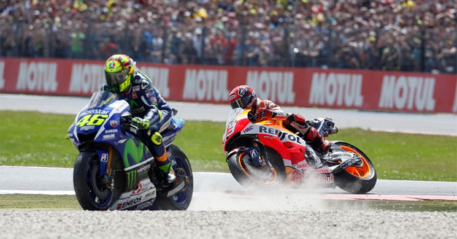
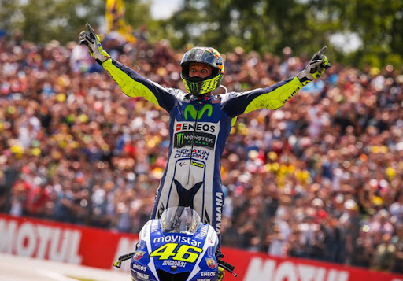

La carrera de Assen 2015, también conocida como el Dutch TT, es recordada como una de las más emocionantes y polémicas de la década en MotoGP. Se disputó el 27 de junio de 2015 en el icónico circuito neerlandés y fue la octava prueba de la temporada. Desde los entrenamientos quedó claro que sería una batalla entre Valentino Rossi y Marc Márquez, quienes mostraron un ritmo superior al resto.
En la salida, Rossi arrancó desde la pole —su primera en más de un año— y logró mantener el liderato en las primeras vueltas, aunque Márquez se mantuvo siempre pegado a su rueda, estudiando sus movimientos. A medida que la carrera avanzaba, fueron distanciándose del resto del grupo, convirtiendo la prueba en un duelo directo entre ambos pilotos. El ritmo era altísimo y las trazadas al límite, especialmente en las curvas rápidas de Assen, donde cada mínima diferencia contaba.

